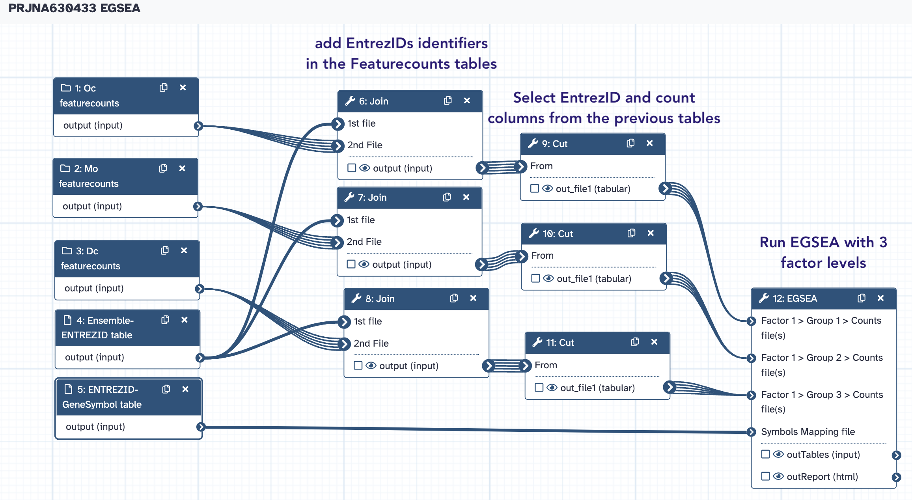

EGSEA¶
EGSEA, an acronym for Ensemble of Gene Set Enrichment Analyses, is a Bioconductor package that utilizes the analysis results of eleven prominent GSE algorithms from the literature to calculate collective significance scores for gene sets. These methods are currently: ora, globaltest, plage, safe, zscore, gage, ssgsea, roast, fry, padog, camera, gsva. The ora, gage, camera and gsva methods depend on a competitive null hypothesis while the remaining seven methods are based on a self-contained hypothesis. EGSEA’s gene set database, the EGSEAdata Bioconductor package, contains around 25,000 gene sets from 16 collections from MSigDB, KEGG and GeneSetDB. Supported organisms are human, mouse and rat, however MSigDB is only available for human and mouse.
An example EGSEA workflow is available at the Bioconductor workflows website.
Currently, only the egsea.cnt function is implemented in this tool. This function takes a raw RNA-Seq count matrix and uses limma-voom with TMM normalization to convert the RNA-seq counts into expression values for EGSEA analysis.
EGSEA returns a HTML report of detailed analysis results for each contrast of interest and comparative analysis results. The heatmap view at both the gene set and summary level and the summary level bar plots can be useful summaries to include in publications to highlight the gene set testing results.
EGSEA inputs¶
1. Counts Data¶
This tool requires a counts matrix (counts table) containing the raw RNA-seq read counts. The counts data can either be input as separate counts files (one sample per file) or a single count matrix (one sample per column). The rows correspond to genes, and columns correspond to the counts for the samples. Values must be tab separated, with the first row containing the sample/column labels. The first column must contain Entrez Gene IDs that are unique (not repeated) within the counts file. Entrez IDs can be obtained from the annotateMyIDs Galaxy tool. Genes with low counts should be removed, such as in the filtered counts matrix that can be output from the limma tool.
Example - Separate Count Files:
| EntrezID | WT1 |
|---|---|
| 1 | 71 |
| 1000 | 3 |
| 10000 | 2310 |
| 100009605 | 3 |
| 100009613 | 9 |
 Note that this format is almost the format returned by Featurecounts, except that
gene identifiers are EntrezID instead of Ensembl IDs. We will do this conversion
programmatically in the workflow, using the appropriate conversion table.
Note that this format is almost the format returned by Featurecounts, except that
gene identifiers are EntrezID instead of Ensembl IDs. We will do this conversion
programmatically in the workflow, using the appropriate conversion table.
Example - Single Count Matrix: | EntrezID | WT1 | WT2 | WT3 | Mut1 | Mut2 | Mut3 | |---|---|---|---|---|---|---| | 1 | 71 | 73 | 69 | 36 | 22 | 28 | | 1000 | 3 | 4 | 2 | 4 | 0 | 1 | | 10000 | 2310 | 2142 | 2683 | 1683 | 2068 | 2172 | | 100009605 | 3 | 1 | 2 | 1 | 5 | 3 | | 100009613 | 9 | 11 | 4 | 13 | 6 | 10 |
2. Factor Information¶
We will enter factor names and groups in the tool form. Look at the tool help if you want to input your data using a count matrix.
3. Symbols Mapping file¶
A file containing the Gene Symbol for each Entrez Gene ID. The first column must be the Entrez Gene IDs and the second column must be the Gene Symbols. It is used for the heatmap visualization. The number of rows should match that of the Counts Matrix.
Note that we already generated this file, taking care to start from raw count
matrices produced by Featurecounts. Therefore, the requirement of "number of rows matching
that of the Counts Matrix" is fulfilled.
The PRJNA630433 EGSEA workflow¶
→ Copy
- the collections
Dc FeatureCounts counts,Mo featureCounts CountsandOc featureCounts Counts - the conversion tables
EnsemblID-ENTREZID tableandENTREZID-GeneSymbol table
in a new history named PRJNA630433 EGSEA
From this history, we are going to run the PRJNA630433 EGSA Workflow:

Take care to match you input data with the workflow instructions in the workflow
form.
Additional considerations¶
- Note that the statistic metric used by the EGSA Galaxy wrapper is the fold change. This fold change is estimated using the raw count matrices and the limma package. As we previously saw, limma-voom is arguably less efficient to call DE genes than DESeq2 or edgeR, when it comes to RNAseq data. However, This is a marginal drawback because the use of genesets gives EGSEA statistical power out of all proportion to that of these DE callers.
- EGSEA implements numerous algorithms. Here, for the sake of simplicity, we only use camera, globaltest and ora. Actually, the tool performs statistic aggregation operations with all algorithms used, in order to increase the statistical power of the analysis (ability to detected significant events of H0 rejection). Therefore, feel free to experiment and use more (or all) algorithms in a EGSEA run.
- One of the most powerful feature of EGSEA its ability to provide HTML reports. To take all benefits, you should dig in these reports for at least a couple of hours ! If you have any point to discuss about them, please do not hesitate to chat in the IOC slack board.
- [x]